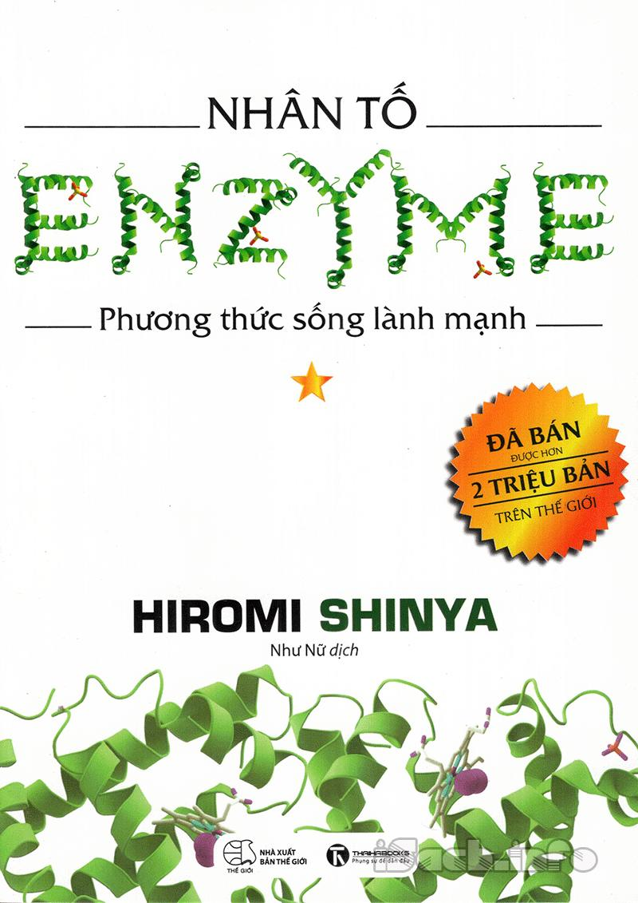

« Back
Nhân Tố Enzyme - Phương Thức Sống Lành Mạnh
By Hiromi Shinya

Lời Nói Đầu: Bạn Có Thể Sống Lâu Mà Không Bệnh Tật?.
Phần 1: Nguy Hiểm Khi Tin Vào Những Nhận Thức Sai Lầm. Lý Do Tôi Không Viết Giấy Chứng Tử Trong 40 Năm Qua.
Phương Pháp Sống Khỏe Mạnh Đến 100 Tuổi.
Những Quan Niệm Phổ Biến Về Sức Khỏe Đều Sai Lầm.
Ăn Thịt Nhiều Không Có Nghĩa Là Khỏe Mạnh.
Vị Tướng, Tràng Tướng Cho Chúng Ta Biết Điều Gì?.
Đường Ruột Của Người Mỹ Và Người Nhật Có Gì Khác Nhau?.
Tỉ Lệ Tái Phát Bệnh Ung Thư Dạ Dày Của Người Nhật Gấp 10 Lần Người Mỹ.
Càng Uống Thuốc Dạ Dày Càng Làm Dạ Dày Kém Đi.
Tất Cả Các Loại Thuốc Về Cơ Bản Đều Là "Thuốc Độc".
Nếu Không Lắng Nghe Cơ Thể Thì Không Hiểu Được.
Chìa Khóa Của Sức Khỏe Là Số Lượng Enzyme.
Tất Cả Đều Có Thể Giải Thích Bằng "Enzyme Diệu Kỳ".
Tại Sao Không Thể Chữa Bệnh Ung Thư Bằng Các Loại Thuốc Chống Ung Thư?.
Những Quan Niệm Phổ Biến Về Ăn Uống Là Sai Lầm.
Uống Nhiều Sữa Bò Dẫn Đến Loãng Xương.
Lý Do Tôi Nghi Ngờ Các Loại "Sữa Chua Huyền Thoại" Chính Là Đây.
Phần 2: Phương Pháp Ăn Uống Để Sống "Bùng Nổ" Và Lâu Dài. Bạn Sẽ Trở Thành Những Gì Bạn Ăn.
Vì Sao Phương Pháp Ăn Uống Shinya Sẽ Ngăn Ngừa Tái Phát Ung Thư?.
Ăn Thực Phẩm Chứa Nhiều Enzyme.
Ăn Đồ Ăn Bị Oxy Hóa, Cơ Thể Cũng Bị Oxy Hóa Theo.
Không Có Loại Dầu Mỡ Nào Có Hại Cho Sức Khỏe Như Bơ Thực Vật.
Các Món Dầu Mỡ Không Thích Hợp Với Người Nhật.
Cách Hấp Thụ Axit Cần Thiết Một Cách Hiệu Quả.
Sữa Bán Trên Thị Trường Có Thể Gọi Là "Sữa Bị Gỉ".
Sữa Của Bò Vốn Dĩ Chỉ Là Đồ Uống Dành Cho Bê Con.
Thịt Của Các Loài Động Vật Có Thân Nhiệt Cao Hơn Con Người Sẽ Làm Bẩn Máu.
Bí Quyết Ăn Thịt Cá Đỏ Là Ăn Ngay Khi Còn Tươi Mới.
Bữa Ăn Lý Tưởng Là 85% Thực Vật, 15% Động Vật.
Gạo Trắng Là Gạo Đã Chết.
Tại Sao Con Người Lại Có 32 Chiếc Răng?.
Tại Sao Động Vật Ăn Thịt Lại Ăn Động Vật Ăn Cỏ?.
Ăn Các Món Không Ngon Sẽ Không Thể Khỏe Mạnh.
Phần 3: Thói Quen Tạo Nên Cơ Thể Khỏe Mạnh. Phần Lớn Nguyên Nhân Của Các Căn Bệnh Đến Từ Thói Quen Hơn Là Do DI Truyền.
Thói Quen Sẽ Viết Lại Gen DI Truyền.
Rượu Và Thuốc Lá Chính Là Thói Quen Sinh Hoạt Tồi Tệ Nhất.
Hội Chứng Ngưng Thở Khi Ngủ Có Thể Chữa Khỏi Bằng Thói Quen Này.
Hãy Uống Nước Trước Khi Ăn Một Tiếng.
Nước Là Đối Tác Tốt Của Các Enzyme Diệu Kỳ.
Nước Có Tính Kiềm Mạnh Chính Là "Nước Tốt".
Muốn Giảm Cân, Hãy Uống Thật Nhiều Nước Tốt.
Nếu Bổ Sung Đầy Đủ Enzyme Sẽ Ngăn Chặn Được Việc Ăn Quá Nhiều.
Phương Pháp Đột Phá Giúp Nhuận Tràng.
Thói Quen Sinh Hoạt Phòng Tránh Tiêu Hao Enzyme Diệu Kỳ.
Sinh Hoạt Không Tiêu Hao Enzyme Diệu Kỳ Của Bác Sĩ Shinya.
Thường Xuyên Chợp Mắt Trong Năm Phút.
Vận Động "Quá Mức", Trăm Hại Mà Không Có Lợi.
Chaplin Vẫn Có Thể Có Con Ở Tuổi 73.
Thời Kỳ Sau Mãn Kinh Là Sự Bắt Đầu Tuyệt Vời Của Tình Dục.
Phần 4: Hãy Lắng Nghe "Kịch Bản Của Sự Sống". Mỗi Sinh Mệnh Đều Có Một Cơ Chế Giúp Đạt Đến Tuổi Thọ Tự Nhiên.
Nền Y Học Chuyên Môn Hóa Làm Hỏng Các Bác Sĩ.
Hãy Chọn "Sức Khỏe 10 Năm Sau" Thay Vì "Bữa Thịt Nướng Tối Nay".
Con Người Có Thể Sống Là Nhờ VI Sinh Vật.
Hỗ Trợ Môi Trường Đường Ruột Để Các Lợi Khuẩn Dễ Dàng Phát Triển.
Mối Quan Hệ Không Thể Cắt Rời Giữa Con Người Và Thổ Nhưỡng.
Các Loại Nông Sản Sử Dụng Thuốc Bảo Vệ Thực Vật Đều Không Có Năng Lượng Sống.
“Tình Yêu" Giúp Tăng Cường Sức Đề Kháng.
Lời Kết: Từ Entropy Đến Shintropy.